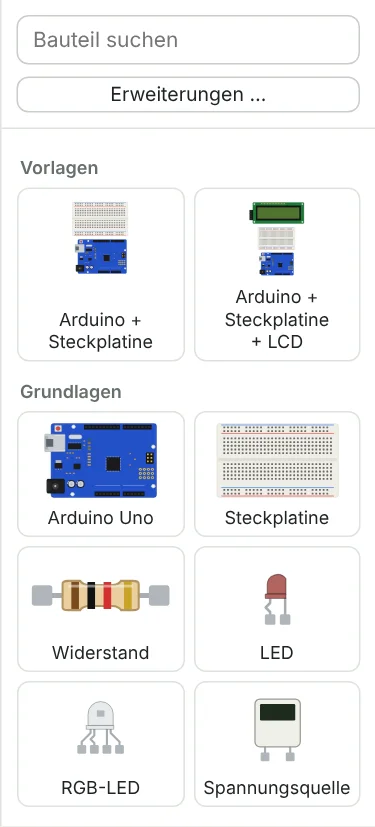
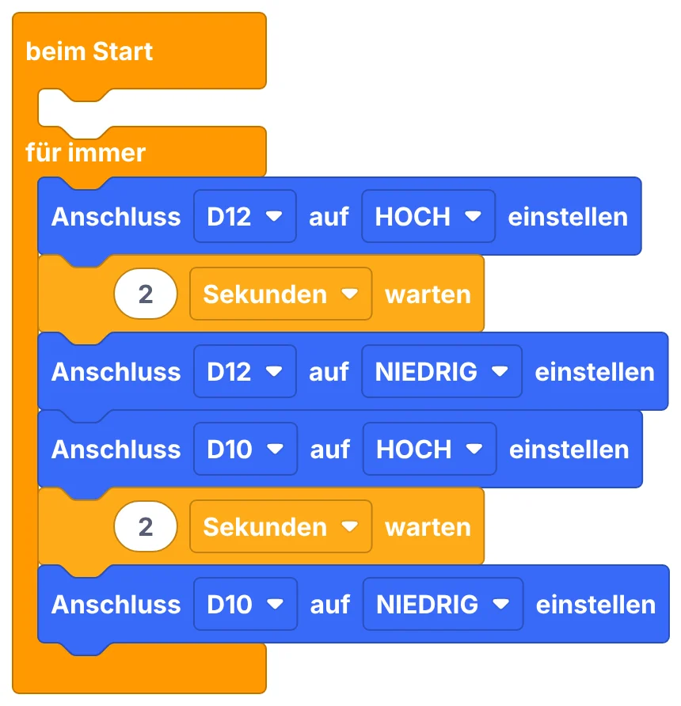
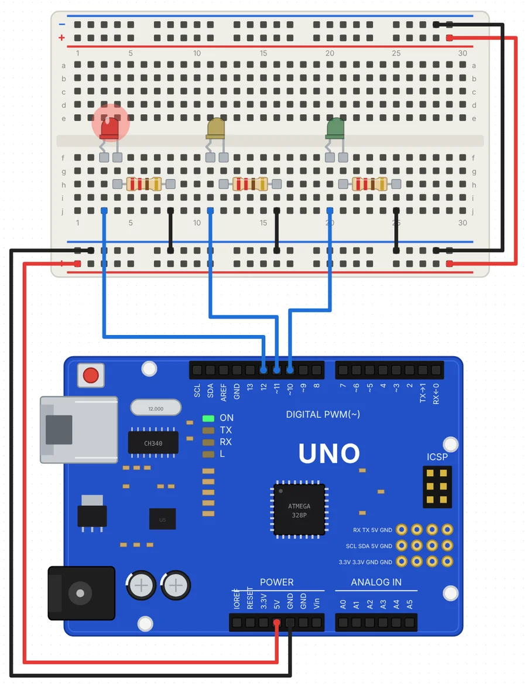
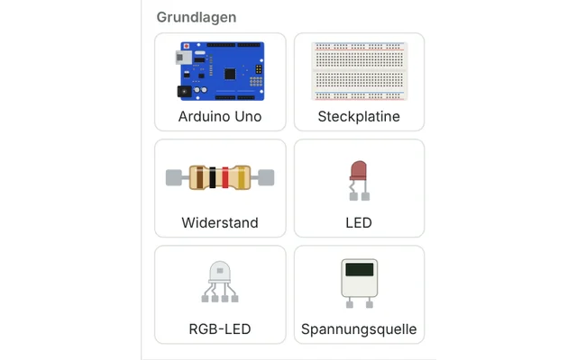
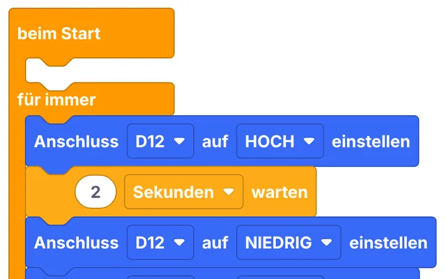
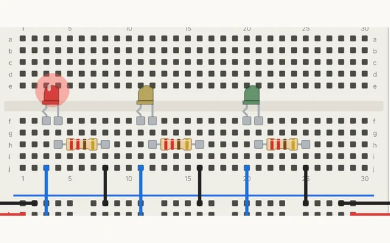
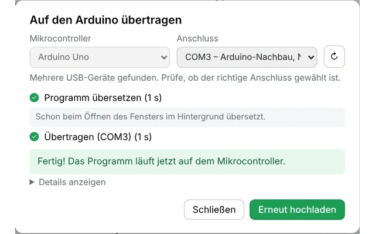
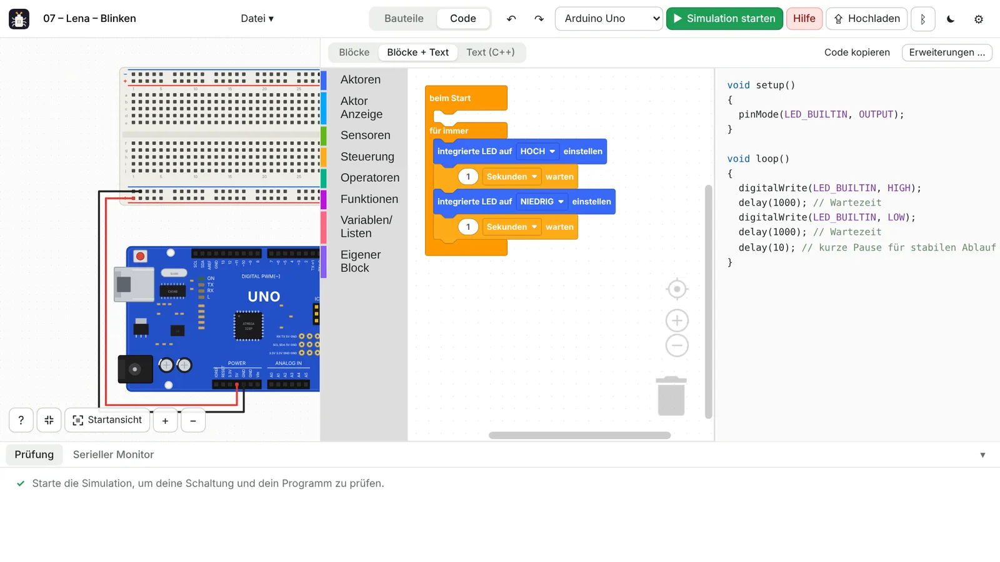
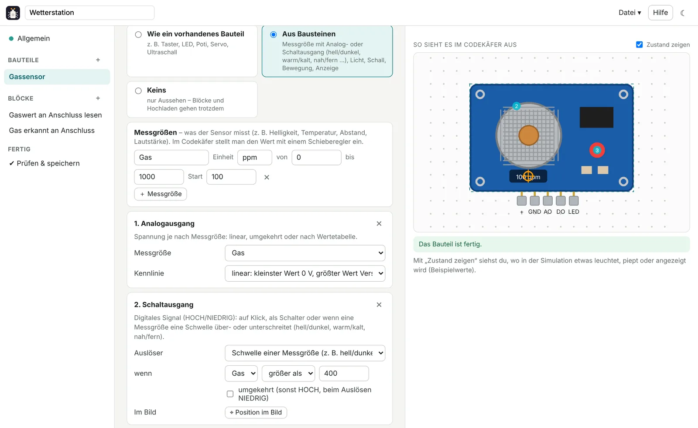

Schaltungen bauen, programmieren, simulieren.
Der Codekäfer verbindet alles in einem Programm: Schülerinnen und Schüler stecken die Schaltung am Bildschirm zusammen, programmieren mit Blöcken, probieren alles in der Simulation aus – und übertragen das Programm dann auf das echte Board.



Vom Bauteil zum fertigen Programm – in vier Schritten
Alles passiert in einem Fenster. Wer einen Fehler macht, sieht ihn sofort – in der Simulation statt erst am Board.

Schaltung bauen
Bauteile aus der Leiste auf die Werkbank ziehen und mit Kabeln verbinden – wie auf der echten Steckplatine.

Mit Blöcken programmieren
Programme aus Blöcken zusammensetzen. Auf Wunsch zeigt der Codekäfer den passenden C++-Code daneben.

Simulieren
LEDs leuchten, der Servo dreht, das Display zeigt Werte. Sensoren stellt man mit Schiebereglern ein.

Hochladen
Ein Klick überträgt das Programm per USB auf das Board – Calliope mini und micro:bit einfach per Laufwerk.
Die Simulation zeigt, was passiert
- Über 40 Bauteile: LEDs, Taster, LDR, Temperatur- und Ultraschallsensor, LCD und OLED, Servo, Motoren, Relais, NeoPixel und mehr.
- Ein Hilfe-Knopf sieht Schaltung und Programm durch: LED ohne Vorwiderstand, Taster ohne Pull-down, vergessene Pausen …
- Serieller Monitor und Messwerte zum Speichern für Excel.
Die Ampel in der Simulation – der gerade ausgeführte Block leuchtet mit.
Blöcke, die man versteht
- Deutsche Blöcke, geordnet nach Aktoren, Sensoren, Steuerung und Operatoren.
- Erweiterungen für Displays, Motoren, Tastenfeld, WLAN-Webseiten (ESP) und die LED-Anzeige von Calliope und micro:bit.
- Der Umstieg ist eingebaut: Die Ansicht „Blöcke + Text“ zeigt das Programm als C++ – ein guter Einstieg in die Arduino IDE.

Eigene Bauteile, Blöcke und Menüs
- Mit dem Codekäfer-Baukasten machen Lehrkräfte aus jedem Sensor oder Modul der Schulsammlung ein eigenes Bauteil: Bild hochladen, Anschlüsse daraufsetzen, Verhalten wählen.
- Vorlagen für Eingaben wie hell/dunkel, warm/kalt, Abstand, Lautstärke oder Gas und für Ausgaben wie Licht, Schall, Bewegung und Anzeigen – in der Simulation mit Schieberegler, Leuchten und Ton.
- Eigene Blöcke mit eigenem C++-Code, der auch in der Simulation mitläuft. Verteilt wird die Erweiterung als Datei oder über den Schulserver.
- Mit dem Codekäfer-Menüeditor gestaltet die Schule Block- und Bauteilmenü selbst: was zu den Grundlagen gehört, was ausgeblendet wird – und z. B. eine eigene Kategorie für das Display, das die Schule verwendet.

Ein Gassensor entsteht im Baukasten – mit Messgröße „Gas“, Analog- und Schaltausgang.
Gemacht für den Technikraum
Der Codekäfer entsteht im Technikunterricht einer Realschule – und ist auf das ausgelegt, was dort zählt: schnell starten, wenig Technik-Ärger, klare Aufgaben.
Läuft vom USB-Stick
Nichts wird installiert. Startdatei doppelklicken – fertig. Auch vom Netzlaufwerk der Schule.
Datensparsam
Kein Konto, keine Cloud, keine Werbung. Projekte bleiben auf dem Stick oder im Schulnetz.
63 Aufgaben
Aufgaben passend zum Schülerskript, mit Tipps und dem Knopf „Aufgabe prüfen“, der die Lösung automatisch testet.
Nichts geht verloren
Automatisches Speichern und Sicherungen – eine ältere Fassung ist mit zwei Klicks zurückgeholt.
Hilfe ohne KI
Fest eingebaute Prüfungen erkennen typische Fehler und zeigen, wo es hakt – ohne Internet.
Mit Schülerskript
Ein Skript führt von der ersten LED über Sensoren bis zu eigenen Projekten.
Die ganze Klasse im Blick
Mit dem Schulserver sieht die Lehrkraft im Browser, woran jede Schülerin und jeder Schüler gerade arbeitet – live, mit Mini-Ansicht der Schaltung.
- Stundencode an die Tafel – die Klasse meldet sich mit Code, Platz-Nummer und Vorname an. Ohne Schüler-Konten.
- Aufgaben und Beispiele an die Klasse verteilen, Abgaben einsammeln.
- Lernstand: welcher Platz welche Aufgabe gelöst hat – live, als Tabelle zum Herunterladen. Zuhause gelöste Aufgaben prüft der Codekäfer in der Schule noch einmal und trägt sie ein.
- Eigene Bauteile und Blöcke aus dem Baukasten an alle Rechner verteilen – freigegeben vom Verwalter.
- Menüs der Schule – welche Blöcke und Bauteile die Schüler sehen, legt der Verwalter im Menüeditor für alle Rechner fest.
- Geschützt: Updates und Einrichten der Schülerrechner nur mit dem Verwalter-Zugang.
- Prüfungsmodus: Vollbild, Hilfen gesperrt, Abgabe auf Knopfdruck.
- Großansicht einzelner Projekte für die Besprechung am Beamer.
- Läuft auf einem Rechner im Schulnetz: Windows, Linux oder Raspberry Pi.

Das Klassenzimmer im Browser der Lehrkraft.
Alles zum Herunterladen
Der Codekäfer und alle Materialien sind dauerhaft kostenlos – für den Unterricht, die eigene Schule und zu Hause. Der Schulserver ist bis einschließlich 30. September 2027 kostenlos. Es gelten die Nutzungsbedingungen.
1 Installationsdateien
Codekäfer
Das Programm mit Werkbank, Blöcken, Simulation, Aufgaben und Beispielen – dazu der Baukasten für eigene Bauteile und Blöcke und der Menüeditor für die Menüs der Schule. Läuft vom USB-Stick, vom Netzlaufwerk oder vom Schulrechner.
Codekäfer herunterladenCodekäfer Schulserver
Klassen, Klassenzimmer-Übersicht, Lernstand, Aufgaben verteilen, Abgaben und Prüfungsmodus. Läuft auf einem Rechner im Schulnetz.
Schulserver herunterladen2 Skript und Anleitungen
Programmieren mit dem Codekäfer
Von der ersten LED über LCD, Töne, Servo, Relais mit Lüfter und Sensoren bis zu eigenen Projekten – mit Aufgaben auf jeder Seite.
PDF herunterladenDer Schulserver im Unterricht
Klassen anlegen, Klassenzimmer öffnen, Lernstand, Aufgaben verteilen, Abgaben und Prüfungen.
PDF herunterladenEigene Bauteile und Blöcke
Der Codekäfer-Baukasten Schritt für Schritt am Beispiel eines Gassensors – mit Nachschlageteil.
PDF herunterladenInstallation im Schulnetz
Codekäfer auf dem Netzlaufwerk bereitstellen und den Schulserver einrichten.
PDF herunterladenDie Oberfläche auf einen Blick
Alle Bereiche und Knöpfe, die vier Arbeitsschritte und die wichtigsten Tastenkürzel – zum Nachschlagen neben dem Rechner.
PDF herunterladenCalliope mini
LED-Anzeige, Knöpfe, Sensoren, Lautsprecher und RGB-LED, eigene Bauteile und Motoren anschließen. Mit Beispielen und Aufgaben.
PDF herunterladenmicro:bit
LED-Anzeige, Knöpfe, Sensoren und Töne – plus eigene Bauteile. Für micro:bit V1 und V2, mit Beispielen und Aufgaben.
PDF herunterladenGetriebemotor
Motor mit Motortreiber L298N anschließen und mit Richtung und Geschwindigkeit steuern.
PDF herunterladenSchülerskript und Anleitungen sind freie Bildungsmaterialien (OER) unter der Lizenz CC BY-SA 4.0: kopieren, anpassen und weitergeben ausdrücklich erlaubt – mit Namensnennung und unter gleicher Lizenz. Ausgenommen sind Name und Logo „Codekäfer“. Alle Materialien sind mit KI-Unterstützung erstellt und vom Autor fachlich geprüft.
3 Broschüren
Der Codekäfer im Überblick
Was der Codekäfer kann, was die Schule braucht – kurz und knapp.
PDF herunterladenFür die Fachschaft
Zum Auslegen in der Fachschaftssitzung oder beim Tag der offenen Tür.
PDF herunterladenFür die Schulleitung
Pädagogischer Nutzen, Datenschutz, Technik und Aufwand für die Schule.
PDF herunterladenIn zwei Minuten startklar
- ZIP-Datei herunterladen und entpacken (Rechtsklick › „Alle extrahieren …“).
- Im Ordner „Codekaefer starten.exe“ doppelklicken.
- Warnt Windows beim ersten Start: „Weitere Informationen“ › „Trotzdem ausführen“.
- Beim ersten Hochladen auf ein Board richtet der Codekäfer einmalig die Upload-Werkzeuge ein (dafür ist Internet nötig).
Updates holt sich der Codekäfer selbst: Einstellungen › „Nach Updates suchen“. Updates sind digital signiert.
Das brauchen Sie
- Rechner
- Windows 10 oder 11 mit Chrome oder Edge
- Boards
- Arduino Uno (auch Nachbauten), ESP32, ESP32-C5, ESP8266, Calliope mini oder micro:bit
- Bereitstellung
- USB-Stick, Netzlaufwerk oder Schulrechner – ohne Installation
- Schulserver
- optional; ein Rechner im Schulnetz (Windows, Linux, Raspberry Pi)
- Internet
- nur einmalig zum Einrichten der Upload-Werkzeuge und für Updates
Fragen oder Anregungen?
Schreiben Sie mir gerne: kontakt@codekaefer.de
Häufige Fragen
Muss etwas installiert werden?
Nein. Der Codekäfer startet mit einem Doppelklick und öffnet sich in einem Chrome- bzw. Edge-Fenster. Er läuft vom USB-Stick, vom Netzlaufwerk oder von einem Schulrechner.
Brauchen die Schülerinnen und Schüler ein Konto oder Internet?
Nein. Es gibt keine Anmeldung bei einem Online-Dienst. Internet wird nur einmal zum Einrichten der Upload-Werkzeuge und für Updates gebraucht. Mit dem Schulserver melden sich die Schüler nur mit Stundencode, Platz-Nummer und Vorname an.
Wo werden die Projekte gespeichert?
Auf dem Stick, im persönlichen Ordner im Schulnetz oder – mit Schulserver – auf dem Server der Schule. Keine Daten verlassen die Schule.
Was ist der Unterschied zu Online-Simulatoren?
Der Codekäfer verbindet Schaltung, Blöcke, Simulation und das Hochladen auf das echte Board in einem Programm – ohne Konto und ohne Cloud. Dazu kommen Aufgaben mit automatischer Prüfung, ein Schülerskript und auf Wunsch der Schulserver mit Klassenzimmer und Prüfungsmodus.
Was kostet der Codekäfer?
Der Codekäfer für die Schülerrechner und alle Materialien – Skript, Anleitungen, Broschüren – sind dauerhaft kostenlos. Der Schulserver ist bis einschließlich 30. September 2027 kostenlos. Danach braucht jede Schule eine Lizenz, Updates inklusive. Läuft die kostenlose Zeit ab, gehen keine Daten verloren: Klassen, Projekte und Abgaben bleiben erhalten.
Kann man eigene Sensoren und Module ergänzen?
Ja. Mit dem Codekäfer-Baukasten erstellen Lehrkräfte eigene Bauteile (mit eigenem Bild und Verhalten in der Simulation) und eigene Blöcke mit C++-Code – meist mit einer Vorlage in wenigen Minuten. Die Erweiterung wird als Datei weitergegeben oder über den Schulserver an alle Rechner verteilt – dort spielt sie der Verwalter ein. Projekte bringen ihre Erweiterungen selbst mit; in der Schulversion gelten aber nur die freigegebenen.
Welche Boards werden unterstützt?
Arduino Uno (auch Nachbauten mit CH340), ESP32, ESP32-C5, ESP8266, Calliope mini und micro:bit. Vorhandene Sets der Schule lassen sich weiter nutzen.
Ist der Codekäfer mit KI entstanden?
Ja. Der Codekäfer wurde von Ulrich Aichler konzipiert und mit Unterstützung von KI (Claude, Anthropic) programmiert; getestet und verantwortet von Ulrich Aichler. Der Codekäfer selbst enthält keine KI und sendet keine Daten an KI-Dienste – auch keine Schülerdaten.